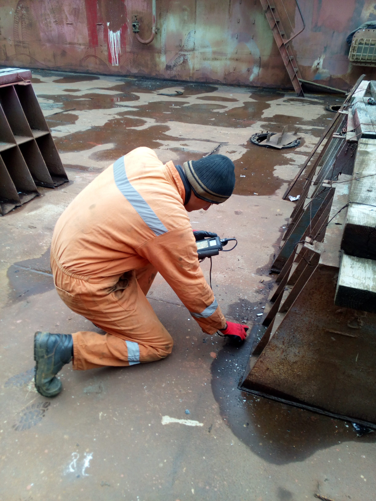
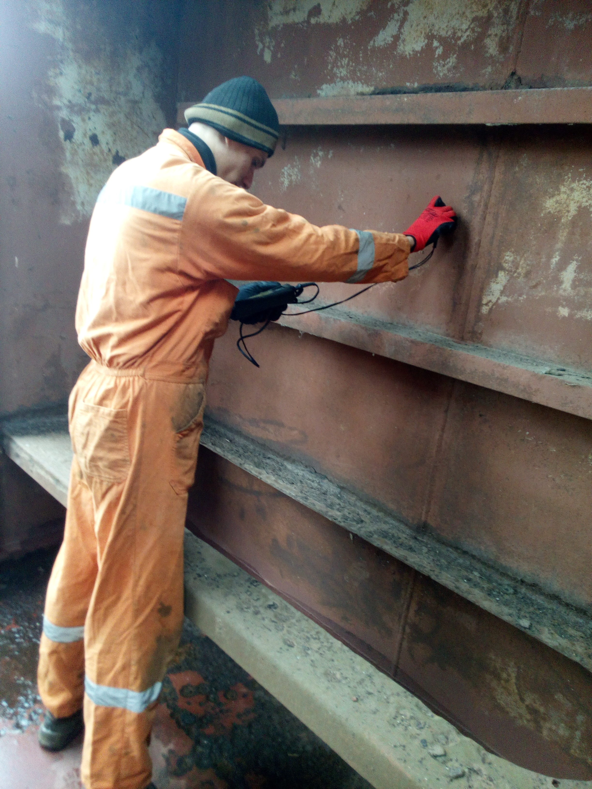
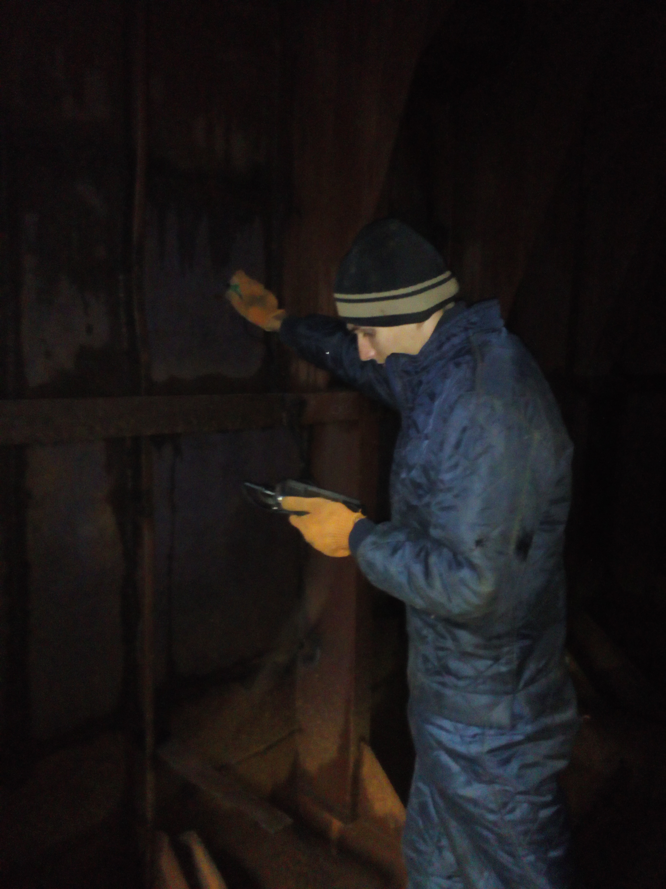
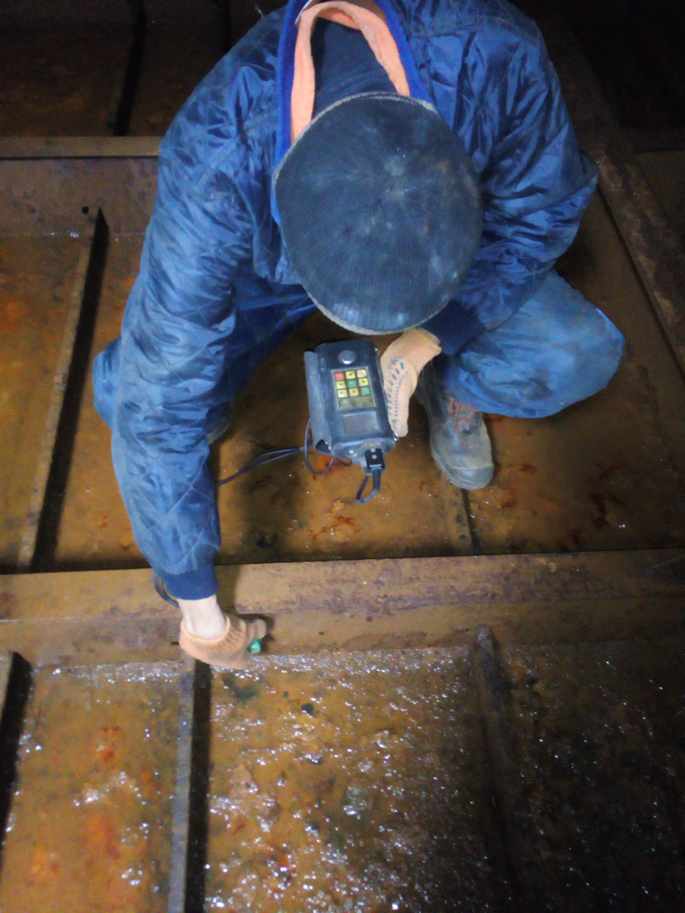
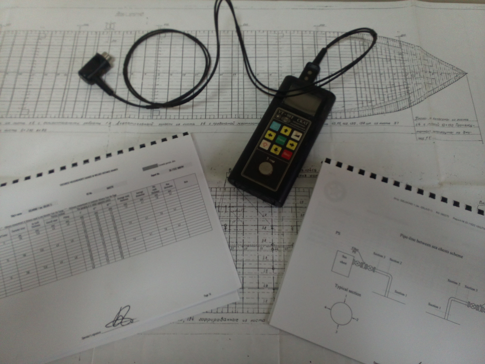
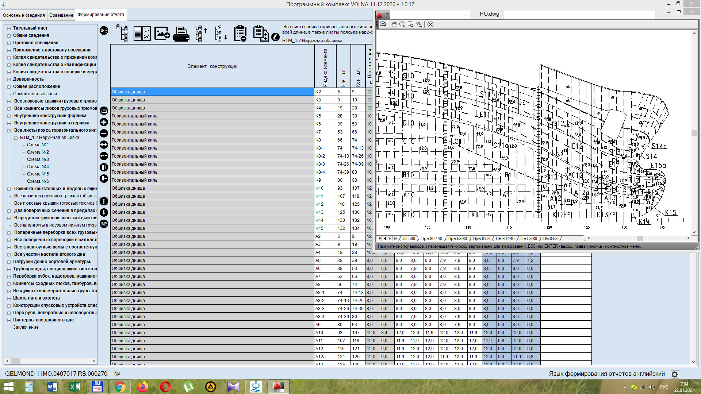
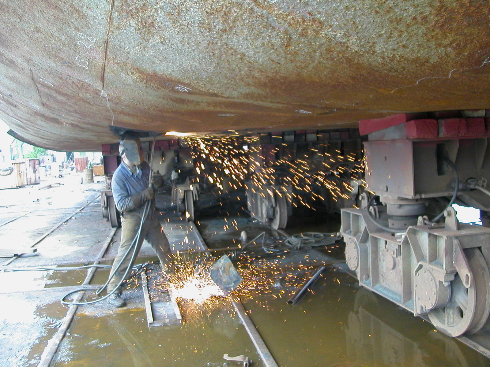
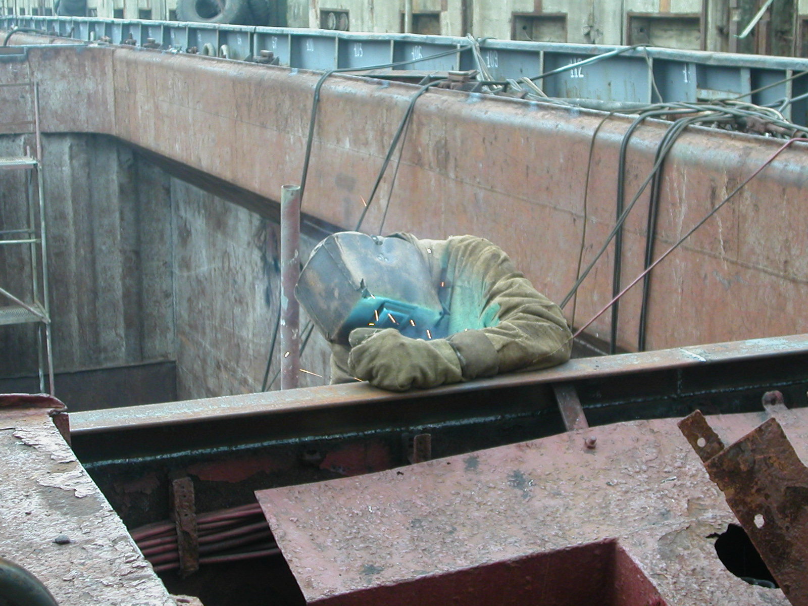
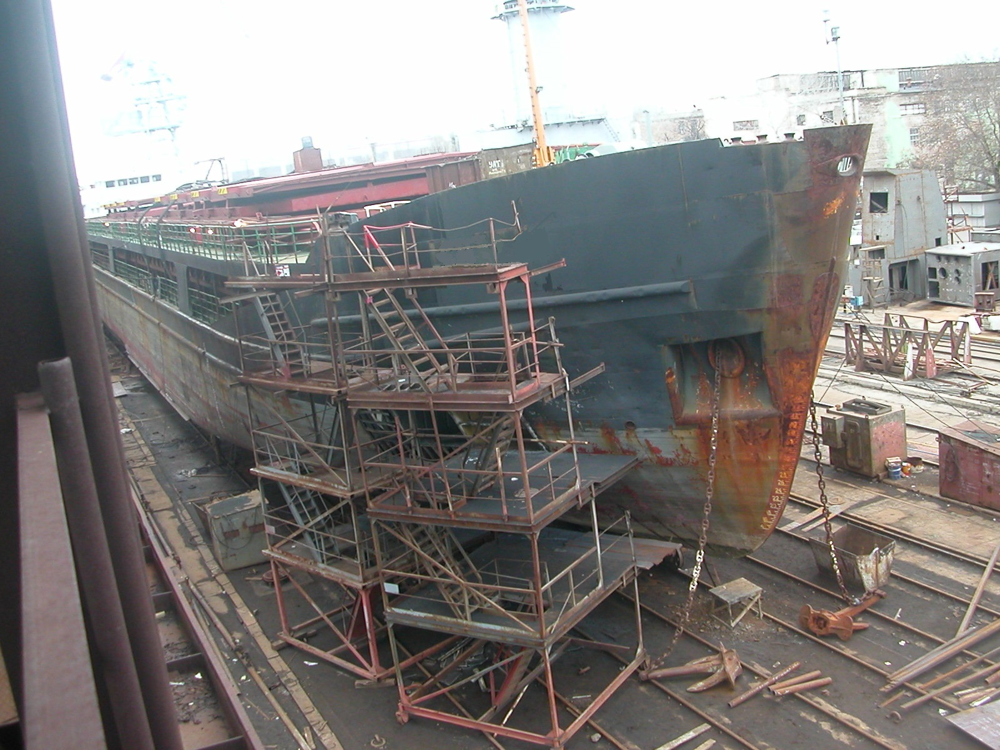

ООО "СЛАВУТИЧ"
Черноморская многоотраслевая судоходная компания
О компании
Компания «Славутич» была основана в 1999 году и выполняет работы в разных секторах морской отрасли.
Опыт работы наших сотрудников и материально-техническая база компании обеспечивает успешное выполнение поставленных задач не только в Украине, но и на территории зарубежных портов, а также в море, во время рейсов.
Офис компании расположен в непосредственной близости от СМАРТ-МЕРИТАЙМ ГРУПП, в состав которой входят: Херсонский судостроительный завод, Херсонский судостроительно-судоремонтный завод (ХССРЗ) им. Коминтерна и Херсонский судоремонтный завод им. Куйбышева (ШИПЯРД1930). Сотрудники компании постоянно работают с судами, которые ремонтируются на этих заводах. Также компания регулярно сотрудничает с филиалами Классификационных обществ в г. Херсоне: RS, SRU, INSB, PHOENIX. В результате продолжительной работы сложились тесные профессиональные отношения со представителями этих предприятий на всех уровнях. Это позволяет решать вопросы и проблемы, связанные с ремонтными работами на судах, своевременно и в кротчайшие сроки.
Основные направления работ нашей компании:
✓ Дефектация корпусов судов, замеры остаточных толщин корпусных конструкций, металлоконструкций судових устройств, трубопроводов, стенок сосудов и т.п.
✓ Судоремонтные работы: корпусно-сварочные работы, ремонт и обновления конструкций корпуса судна.
✓ Проектно-конструкторские разработки, оформление судових документов.
Опыт работы наших сотрудников и материально-техническая база компании обеспечивает успешное выполнение поставленных задач не только в Украине, но и на территории зарубежных портов, а также в море, во время рейсов.
Офис компании расположен в непосредственной близости от СМАРТ-МЕРИТАЙМ ГРУПП, в состав которой входят: Херсонский судостроительный завод, Херсонский судостроительно-судоремонтный завод (ХССРЗ) им. Коминтерна и Херсонский судоремонтный завод им. Куйбышева (ШИПЯРД1930). Сотрудники компании постоянно работают с судами, которые ремонтируются на этих заводах. Также компания регулярно сотрудничает с филиалами Классификационных обществ в г. Херсоне: RS, SRU, INSB, PHOENIX. В результате продолжительной работы сложились тесные профессиональные отношения со представителями этих предприятий на всех уровнях. Это позволяет решать вопросы и проблемы, связанные с ремонтными работами на судах, своевременно и в кротчайшие сроки.
Основные направления работ нашей компании:
✓ Дефектация корпусов судов, замеры остаточных толщин корпусных конструкций, металлоконструкций судових устройств, трубопроводов, стенок сосудов и т.п.
✓ Судоремонтные работы: корпусно-сварочные работы, ремонт и обновления конструкций корпуса судна.
✓ Проектно-конструкторские разработки, оформление судових документов.
Представительства компании находятся в Херсоне, Одессе и Мариуполе.
Услуги
1. Замеры остаточных толщин конструкций судна.
Наша компания выполняет работы по дефектации корпусов судов с выполнением замеров остаточных толщин.
Сотрудники компании, выполняющие дефектацию, сертифицированы для работы на судах различных типов, как на судоремонтных верфях, так и во время рейсов, выполняя предремонтную дефектацию и подготавливая судно к ремонту на верфи.
Компания сертифицирована классификационными обществами на право выполнения замеров остаточных толщин.
Замеры толщин выполняются при помощи ультразвуковых приборов, которые сохраняют лакокрасочное покрытие конструкций. По результатам дефектации оформляются технологические указания для ремонта, с описанием параметров ремонтируемых участков, включая весовые характеристики. При этом используются экономичные и технологичные методы ремонта, учитываются как требования Регистра, так и пожелания судовладельца.
По результатам замеров остаточных толщин оформляется «Отчет о замерах остаточных толщин» в объеме требований класса. «Отчет» передается судовладельцу для ознакомления и согласовывается с инспектором класса.
В процессе ремонта судна наши сотрудники выполняют технологическое сопровождение и контроль за выполнением ремонтных работ, оперативно решая возникающие вопросы с представителями судоверфи и Регистром.
Компания выполняет работы, связанные с определением технического состояния судна:
- экспертная оценка технического состояния корпуса судна по заявке судовладельца, включающая фотоотчет;
- обследование судна в результате аварийных повреждений и разработке рекомендаций по ремонту;
- предпродажный осмотр судна по заявке компании-покупателя.
- 
- 
- 
- 
- 
- 
2. ВЫПОЛНЕНИЕ КОРПУСНО-СВАРОЧНЫХ РЕМОНТНЫХ РАБОТ.
✓Организация ремонтных бригад для выполнения ремонта конструкций судна во время рейсов.
✓Выполнение ремонта конструкций в портах в результате аварийных повреждений.
✓Выполнение ремонтных работ на судоверфях.
✓Изготовление и монтаж установок по обработке балластных вод.
✓Сварочные работы. Сварщики нашей компании имеют сертификаты классификационных обществ, отвечающих международным стандартам, а также стаж работы в судоремонте от 10 до 20 лет.
- 
- 
- 
3. ПРОЕКТНО-КОНСТРУКТОРСКИЕ РАБОТЫ.
Опытные конструкторы компании разрабатывают большой объем конструкторской документации, перечень которой приведен ниже:
✓Расчет надводного борта;
✓Оценка вариантов увеличения грузоподъемности судна;
✓Расчет остойчивости;
✓Расчет аварийной остойчивости;
✓Информация о маневренных характеристиках судна;
✓Кренование судна;
✓Расчет прочности корпуса;
✓Расчет остойчивости при перевозке зерна;
✓Инструкция по загрузке;
✓Буклет аварийной буксировки;
✓Инструкция капитану буксира по буксировке;
✓Обоснование перегона вне разрешенного района плавания;
✓Градуированные таблицы цистерн балласта и запаса;
✓Анализ соответствия судна требованиям, предъявляемым при перевозке опасных грузов морем в соответствии с кодексом ММОГ и веществ опасных навалом (ВОН) согласно кодекса ВС;
✓Инструкция по техническому обслуживанию спасательных средств (согласно Конвенция СОЛАС 74, Правило 36, раздел V, Глава III, часть В);
✓Инструкция по оставлению судна и судовые пособия по подготовке (согласно Конвенция СОЛАС 74, Правило 35, раздел V, Глава III, часть В);
✓Судовой план операций с мусором (согласно Конвенция МАРПОЛ 73/78, Прилож. V, Прав. 9 и Резолюция МЕРС 65(37), от 14.09.95.);
✓Журнал операций с мусором;
✓План охраны судна (согласно Международного кодекса по охране судов и портовых сооружений (Кодекс ОСПС; Резолюция 2 принятая 12.12.2002 г.));
✓Отчет о проведении оценки охраны (согласно Международного кодекса по охране судов и портовых сооружений (Кодекс ОСПС; Резолюция 2 принятая 12 декабря 2002 года));
✓Оценка охраны судна (согласно Международного кодекса по охране судов и портовых сооружений (Кодекс ОСПС; Резолюция 2 принятая 12 декабря 2002 года));
✓Судовой журнал выдачи ключей;
✓Журнал посещений судна;
✓Журнал досмотра судна;
✓SOPEP (часть 1) - Судовой план чрезвычайных мер по борьбе с загрязнением нефтью Составлен в соответствии с требованиями Правила 26 Приложения I к МАРПОЛ73/78, Резолюции MEPC.54(32) от 26.03.1992 и Резолюции MEPC.86(44) от 13.03.2000;
✓SOPEP (часть 2) - Судовой план чрезвычайных мер по борьбе с загрязнением нефтью (пункты связи);
✓Наставление по подготовке персонала и буклет эксплуатационного характера по мерам противопожарной безопасности (Подготовлен согласно Правил 14, 15, 16 части Е главы II-2 MK СОЛАС-74 с поправками 2000 года (Резолюция MSC.99(73));
✓План технического обслуживания, ремонта и проверки противопожарных систем и средств (согласно Правил 14, 15, 16 части Е главы II-2 MK СОЛАС-74 с поправками 2000 года (Резолюция MSC.99(73));
✓Проверка прочности дельных вещей и оборудования палубы в носовой части в соответствии с требованиями МАКО S27.
Сертификация
Компания "Славутич" имеет признание по измерению толщин таких Классификационных сообществ как
SRU, MSR.
Компания имеет сертификат системы качества ISO 9001:2015.


Контакты
Телефоны
Директор Биленко Юрий Леонидович +38 (050) 396-66-91
Технический директор Суворов Анатолий Иванович +38 (066) 571-53-48
Главный офис в Херсоне +38 (050) 396-66-91
Отделение в Одессе +38 (050) 560-12-00
Отделение в Мариуполе +38 (050) 600-28-97
+38 (098) 383-90-68
Электронный адрес
e-mail: slavutich_99@yahoo.com
slavutich.od@gmail.com
Адрес главного офиса
73000, Херсонская обл., город Херсон, Карантинный Остров, дом 1.